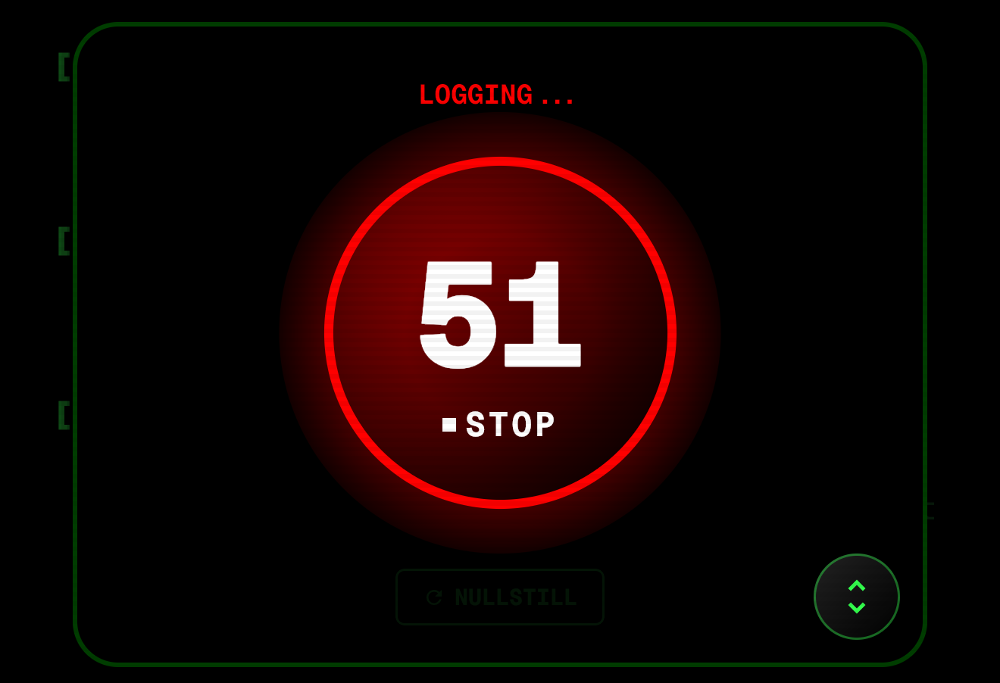

STOPWATCH: Integrated stopwatch. Start the stopwatch when the arc is struck and stop it when the arc is extinguished. The app calculates the welding speed based on the provided length.

LOGGING: Record and log parameters: Voltage (U), Current (I), Time (T), Length (L), K-factor, and interpass temperature ++
ISO STANDARDS References are made to ISO standards wherever used.
DATA EXORT: Export your project as .csv or send it to another user with .JSON